Лазанья классическая с мясом
ИТАЛЬЯНСКАЯ КУХНЯ
ОСНОВНОЕ:
- Фарш мясной (мясо любое)
- Помидоры
- Лук (небольшой)
- Листы лазаньи
- Чеснок
- Томатная паста
- Твёрдый сыр
- Растительное масло
- Соль
- 800 гр
- 2 шт.
- 2 шт.
- 10 шт.
- 2 зубч.
- 2 стол.л.
- 100 гр
- 1 стол.л.
- по вкусу
ДЛЯ СОУСА:
- Сливочное масло
- Молоко
- Пшеничная мука (без горки)
- Душистый перец
- 50 гр
- 600 мл
- 5 стол.л.
- по вкусу

Вкусная, сытная, ароматная. Пальчики оближешь! Запечь лазанью классическую с фаршем в духовке сможет даже начинающая хозяйка, ведь это довольно просто и легко. Готовое блюдо обязательно порадует своим вкусом. Бархатный и сливочный соус Бешамель делает лазанью очень нежной.
ЭНЕРГЕТИЧЕСКАЯ ЦЕННОСТЬ НА 100г
Калории
237 ккал
Белки
8 грамм
Жиры
15 грамм
Углеводы
16 грамм
ИНСТРУКЦИЯ ПРИГОТОВЛЕНИЯ
1 шаг
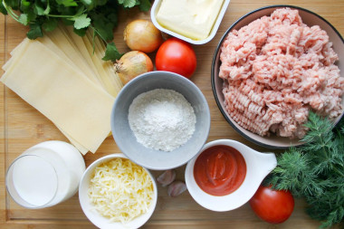
Как запечь простую лазанью классическую с фаршем в духовке? Подготовьте необходимые продукты. Заранее включите духовку на 190 градусов.
2 шаг
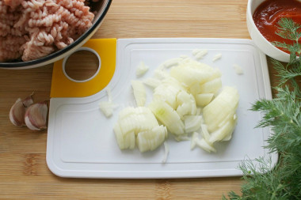
Лук очистите и нарежьте произвольно некрупными кусочками. Чтобы лук при нарезке не щипал глаза, обмойте его и нож холодной водой.
3 шаг
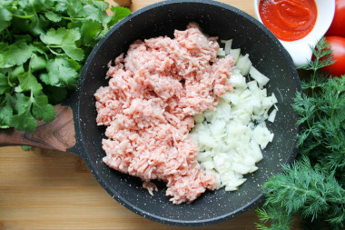
На сковороде разогрейте растительное масло и обжарьте на нём фарш и лук в течение пяти минут, постоянно помешивая. Нужно постараться сделать так, чтоб из фарша не формировались комочки в процессе обжаривания.
4 шаг
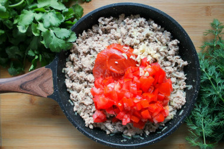
Чеснок почистите и мелко нарубите. Помидоры помойте и нарежьте кубиками. С помидора предварительно можно снять кожицу. Для этого сделайте крестообразный надрез на каждом помидоре, залейте их кипятком на одну минуту, после чего слейте воду. Благодаря этому кожицу с помидоров снимется без труда. Отправьте в сковороду к фаршу с луком томатную пасту, нарезанные помидоры и чеснок. Добавьте соль по вкусу.
5 шаг
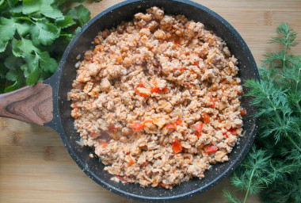
Всё хорошо перемешайте, убавьте огонь до среднего и тушите фарш под закрытой крышкой около 10 минут. На этом этапе можно добавить к фаршу щепотку базилика или другие любимые специи.
6 шаг
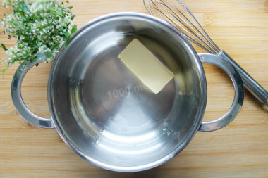
Пока тушится фарш, приготовьте соус Бешамель. Для этого в сотейнике на маленьком огне растопите сливочное масло.
7 шаг
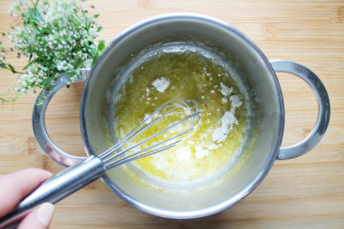
Всыпьте муку и, непрерывно помешивая венчиком, слегка её обжарьте на растопленном масле.
8 шаг
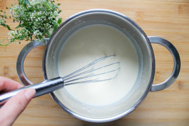
Постепенно влейте молоко, продолжая перемешивать массу венчиком, чтобы не образовалось комочков. Доведите смесь до консистенции густых сливок, снимите с огня и остудите.
9 шаг
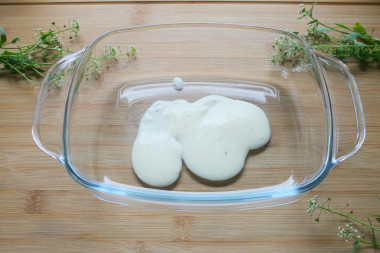
Дно формы для запекания смажьте растительным маслом или застелите пекарской бумагой. Залейте дно соусом Бешамель.
10 шаг
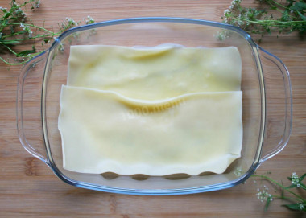
Первым слоем выложите листы для лазаньи. Если вы используете маленькую форму, в которую с трудом помещается сухой пласт, то листы лучше подержать в кипящей воде около 2-3 минут. Так они станут мягкими и податливыми и их без труда можно будет уложить в любую форму, а лишние края обрезать ножом. Сверху листы снова полейте соусом.
11 шаг
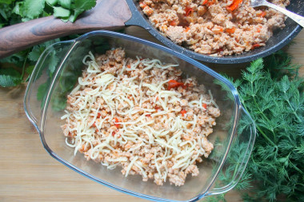
Следующим слоем выложите фарш и присыпьте его слегка тёртым сыром.
12 шаг
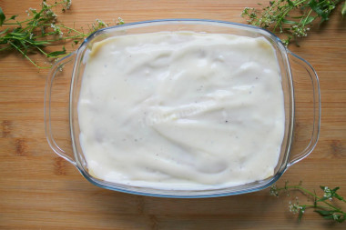
Залейте фарш соусом. Выкладывайте так слои, пока не заполнится форма. Последний слой с листами нужно очень хорошо залить соусом, особенно края, иначе есть вероятность, что лист теста засохнет и пригорит в процессе приготовления.
13 шаг
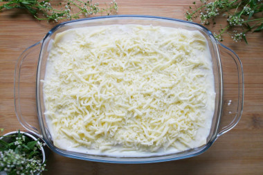
Завершающим слоем посыпьте тёртый сыр.
14 шаг
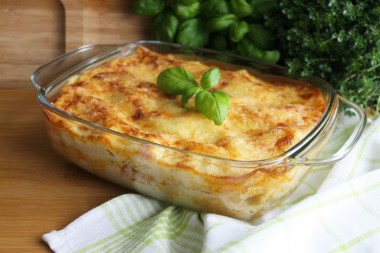
Отправьте лазанью в разогретую до 190-200 градусов духовку на 30-35 минут. Ориентируйтесь на то, что на лазанье должна образоваться аппетитная золотистая корочка. Готовое блюдо выньте из духовки и дайте настояться около 10 минут. Разрежьте лазанью на порции и разложите по тарелкам. Подавать горячей. приятного аппетита!
СОВЕТЫ К РЕЦЕПТУ